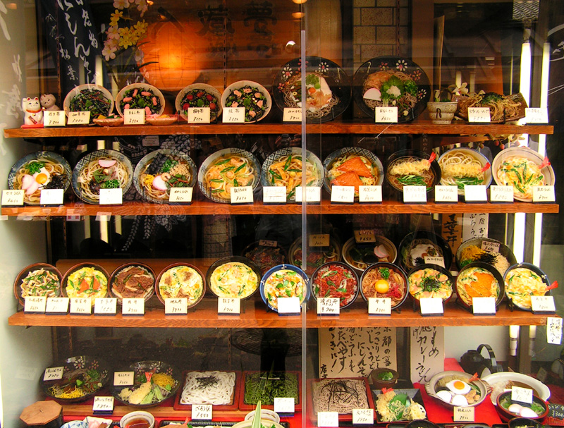
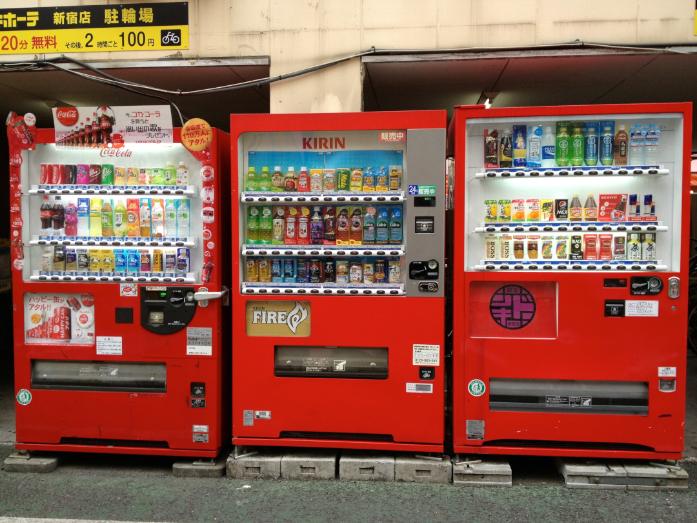

Japón
Es uno de los destinos más adictivos del planeta. Es cierto, viajar a Japón supone fascinarse gracias a esa mezcla de tradiciones milenarias con tecnologías de última vanguardia. En pocos lugares del planeta podrás experimentar a la vez lo que significa moverte por una metrópolis futurista como Tokio, divisar las cumbres nevadas del monte Fuji desde un onsen, admirar la delicadeza de un jardín japonés en Kanazawa, escuchar las oraciones en algún templo budista de Kioto al atardecer o degustar el sushi más fresco del mundo.
En Japón puedes pasar de ciudades superpobladas a aldeas en las que todavía no están acostumbrados a la presencia de extranjeros, pero en ambos escenarios te sentirás tratado como un huésped de honor. Aparte de decirte qué hacer en Japón y qué ver en Japón, vamos a tratar de ayudarte con los preparativos de tu viaje. Aquí van una serie de recomendaciones sobre la documentación, vacunas, vuelos, alojamiento o seguro de viaje. Prepárate que empieza un viaje muy emocionante.
Recomendaciones antes de viajar a Japón
Cuando ir y clima
Lo primero que hay que tener en cuenta para planificar un viaje a Japón es, desde luego, buscar el mejor momento para ir. Cualquier momento del año es bueno y cada estación ofrece un paisaje diferente y oportunidades distintas.
También depende mucho de la zona del país que vayas a visitar, ya que al tratarse de un país que abarca desde zonas montañosas y de nieve en el norte hasta entornos tropicales en el sur, el rango es realmente amplio.
Interesa saber que la época de lluvias es en mayo y junio. Julio y agosto son los meses más calurosos mientras que septiembre y octubre se adentran en la temporada de tifones. De hecho, nosotros llegamos a Tokio justo con los últimos coletazos de un tifón sobre nuestras cabezas.
Durante los meses de diciembre a febrero el ambiente es frío y con frecuentes nevadas en la mitad norte, alcanzando en ocasiones a la ciudad de Tokio.
Por tanto las épocas más recomendables para viajar son primavera y otoño, ya que contarás con temperaturas suaves y buen tiempo en general. Súmale además que en esas fechas suceden dos de los eventos más importantes del año en el país, el sakura en primavera y el momiji en otoño, y tendrás el cóctel perfecto.
Documentación y seguridad
Si tienes nacionalidad española, viajar a Japón no requiere ningún tipo de tramite de visado, gracias a los acuerdos bilaterales entre ambos países. Basta con tener el pasaporte con una fecha de caducidad mayor a 6 meses y el visado te lo harán rápidamente en el aeropuerto al llegar.
El país tiene fama de ser muy seguro y con un nivel de delincuencia muy bajo. Desde luego, después de haber estado dos veces en Japón, no puedo estar más de acuerdo.
Eso no quiere decir que no debas tomar las precauciones habituales recomendables en todo viaje, ya que delincuencia baja no quiere decir delincuencia cero y siempre puede haber algún espabilado o espabilada buscando al primer incauto despistado.
Las leyes en Japón difieren en muchos aspectos de las españolas o europeas, por lo que es importante respetar todas las normas, avisos y señalizaciones que veas en tu camino. No dudes en preguntar en caso de duda a cualquier policía, ya que te ayudarán sin dudarlo. Son muy estrictos en el cumplimiento de la ley pero, precisamente por ello, también harán lo posible para ayudarte a comprenderla.
Es muy importante llevar siempre contigo el pasaporte por si te solicitan identificación. Si no la llevas pueden llevarte a comisaría y hacerte esperar hasta que alguien pueda ir a buscar tu documentación al hotel o donde sea que la tengas. Si la has perdido, contacta rápidamente con la embajada sin dudarlo.
Respecto a los ciudadanos, la legendaria amabilidad de la que siempre se habla sigue estando por encima de cualquier alta expectativa que te hayas formado. Siempre consiguen sorprenderme, aun sabiendo que son extremadamente serviciales, siempre en aras de hacerte sentir como en casa.
Comprobarás que su nivel de ingles es normalmente escaso, pero a pesar de ello siempre intentan hacerse entender. De hecho, es fácil que te encuentres en la situación de preguntarle algo a alguien que no hable ni una sola palabra en inglés pero se vuelque en ayudarte, aun sin saber que es lo que realmente le has consultado.
Esto seguramente te generará situaciones realmente confusas en ocasiones (y acabarás echándote unas buenas risas, a pesar de quedarte igual que al principio).
Transporte
Mientras que en Tokio y Osaka el medio de transporte más utilizado es el metro, en Kioto el autobús es el mejor medio para recorrer la ciudad cómodamente.
- El metro
- El autobús
- El tren interurbano
En Tokio el metro funciona muy bien, pero hay que tener en cuenta que en la ciudad operan dos compañías distintas y de manera independiente: la Tokyo Metro y la Toei.
La linea Toei será tu mejor elección para ir a Asakusa o Shinjuku, mientras que la Tokyo Metro te cubrirá el resto de la ciudad. Además, en Tokio hay muchas estaciones de tren convencionales, de la JR Line (que podrás utilizar con el JR Pass si es que lo has adquirido y activado) que te permitirán desplazarte a ciudades periféricas del área metropolitana de Tokio.
Estas estaciones están también repartidas por toda la ciudad, no solo en la estación central, por lo que revisa si tienes alguna cerca de tu alojamiento ya que puede facilitarte mucho las cosas si tienes pensado ir a lugares como Yokohama, Kamakura o incluso al Museo Ghibli. Este es el mapa de metro de Tokio.
El precio del metro depende de la estación a la que vayas, pero está entre ¥170 y ¥250 (1,5€-2€). Hay algunas lineas especiales, como la Yurikamome que va a Odaiba, cuyo precio es de ¥320 (2,5€).
En Kioto, el autobús tiene una red impresionante, con decenas de lineas cubriendo toda la ciudad y muchas de ellas llevándote directamente a las entradas de los templos y palacios que seguramente querrás visitar.
Aunque un buen mapa te será de ayuda para saber que número de autobús debes coger para ir a uno u otro lugar, es bastante fácil saber a donde se dirige el autobús ya que sus indicaciones incluyen todos los puntos turísticos y que parada es la mejor para bajarte. Este es el mapa de autobuses de Kioto.
Eso si, recuerda que en Kioto al autobús se sube por la puerta trasera y se paga al salir, por la puerta delantera. Hay un bono de tarifa plana de 1 día por ¥500 (4€) por lo que, si tienes previsto coger mas de dos veces el autobús en el mismo día, el bono te saldrá a cuenta. Se puede comprar en la mayoría de autobuses, pidiéndoselo al conductor. El precio normal por viaje, sea a donde sea, es de ¥230.
Por último, las lineas de tren interciudad, la mayoría de ellas operadas por JR, funcionan realmente bien.
En lo que concierte a estos trenes, la recomendación más frecuente es la de adquirir el Japan Rail Pass, un bono de tren para turistas que se puede adquirir por 7, 14 o 21 días. Solo se puede comprar desde fuera del país, por lo que decidir si adquirirlo o no dependerá de tu plan de viaje y hay que hacerlo con antelación.
El bono solo aplica a trenes del grupo JR, pero dado que eso cubre gran parte del territorio japonés, te cubrirá prácticamente todos tus desplazamientos interurbanos.
Al igual que pasaba con las lineas de cercanía en Tokio de JR, la frecuencia de trenes es enorme, de puntualidad extrema y con un sistema de avisos excelente que te avisan de si hay algún retraso, incluso si solo llega uno o dos minutos más tarde de lo previsto.
Alojamiento
Las opciones son tantas que dependerá de tu estilo de viaje y presupuesto el que te decantes por una u otra.
Los hostels no tienen nada que envidiar a muchos hoteles, teniendo siempre los servicios habituales de hostels que te permiten moverte a tu aire, disfrutar de zonas comunes y tener a tu disposición todo tipo de información para tus visitas. La posibilidad de comentar detalles con otros huéspedes, disfrutar de servicio de cafetería y muchos más detalles son siempre de agradecer.
Si prefieres un hotel convencional, el rango de precios es muy amplio también y no es difícil encontrar a precios razonables hoteles con su servicio de recepción, su habitación amplia con baño privado y demás comodidades.
Otra opción es la de alojarse en un ryokan y experimentar el estilo tradicional de pernocta, habiendo también establecimientos de amplia variedad de precios (hay hostels o guest houses orientados también a este estilo).
Los hoteles capsula son también otra curiosidad del país, pero, no son más baratos que las opciones ya mencionadas. Por ello solo lo recomendamos si quieres experimentar por una noche la sensación de dormir en estos espacios reducidos, como la curiosidad que es, pero no como una vía de ahorro en alojamiento.
Comida
Comer en Japón es una autentica delicia y a precios irrisorios.
A continuación comentamos las diferentes alternativas que se pueden encontrar para improvisar cenas, llevar algo de comida para excursiones de un día o simplemente comer algo o beber algo para combatir el calor:
-
Restaurantes y puestos de comida:
En Japón los restaurantes normalmente están especializados en unos pocos platos y la filosofía es entrar, ser atendidos rápidamente, comer rápido también y que entren los siguientes. Esto a los restaurantes les da un nivel de rotación altísimo y les permite tener unos precios muy bajos, incluso en zonas muy turísticas. Por ello, si ves colas en el exterior de alguno, no te preocupes porque la espera será poca debido a esa rotación y en nada estarás comiendo.
Por si fuera poco, prácticamente todos los restaurantes exhiben replicas de los platos en el escaparate o con fotos, por lo que elegir que comer o que restaurante tiene una especialidad que te apetezca probar es extremadamente sencillo.
Además siempre tienes visible el precio en la entrada y sabrás de antemano exactamente que es lo que vas a pagar. Sin sorpresas.
Incluso hay restaurantes con una máquina expendedora de tickets fuera, por lo que primero pagas y luego le entregas al encargado un ticket con la comida exacta, sin tener que explicar nada.
Además, siempre está incluida el agua o té sin limites, por lo que, salvo que quieras alguna otra bebida especial, no tendrás problema para hidratarte. Extremadamente sencillo y práctico.
Normalmente, se puede comer y cenar por entre ¥600-¥1.000 (5 – 8€) cada uno.
En restaurantes orientados a celebraciones familiares, y por lo tanto a compartir tiempo en la mesa (cosa que no suele ser frecuente en los anteriormente mencionados). se puede salir por ¥2.000 (16€) por cabeza, comiendo abundantemente y acompañándolo incluso con unas copas.
Eso si, tened en cuenta que el café, la cerveza y el alcohol en general son caros. Es habitual pagar ¥500 (4€) por un café y lo mismo por una cerveza, casi lo mismo que el presupuesto para comer.
-
Combini:
Socorridos a cualquier hora, ya que te puedes encontrar con cajas de bento, onigiris y otras cositas interesantes para llevar, o incluso comer allí.
De noche, si llegas a tu alojamiento muy tarde, será tu mejor opción para cenar algo, ya que tendrás alguno a menos de 200 metros. Seguro. Además, de noche, los precios suelen ser más baratos en los productos frescos.
-
Supermercados:
Más baratos que los combini, desde luego, y con bastante variedad. El problema es que hay menos y normalmente en zonas más residenciales y no tan turísticas, por lo que puede costar más tener alguno de mano.
-
Tiendas de sushi:
Si te encuentras alguna a ultima hora, tendrás descuentos de hasta el 50 o 70% ya que no es frecuente que lo vendan de un día para otro. La frescura sigue siendo excelente ya que no han pasado ni 12 horas desde que los han hecho, en el peor de los casos.
-
Máquinas de refrescos:
Si quieres refrescarte en algún momento de tu recorrido, simplemente detente, mira alrededor y a menos de 50 metros tendrás una máquina expendedora de bebidas con una variedad enorme.
El precio es ridículo. Van desde los ¥100 (aprox. 0,80€) hasta los ¥180 (aprox. 1,50€). Café en lata de todo tipo, bebidas isotónicas, refrescos gaseosos y cantidad de bebidas adictivas que no encontrarás fuera del país nipón.

Galería de imágenes


{kind=link}
Opiniones
Fulanito
Cierto con lo de las bebidas adictivas que no encontrarás fuera del país. Tras volver de allí tuve síndrome de abstinencia por culpa de un té de manzana que no he vuelto a probar T.T
Menganita
A mí me pasó lo mismo con la Melon soda XD
Pepito
Os habéis olvidado mencionar lo de los váteres con chorrito. Al principio lo usas con miedo, pero después ves que es un avance. Me dediqué a probar todos los váteres de los establecimientos a los que íbamos. Unos tenían música, otros tenían calefacción (a veces no sabías si era que alguien acababa de usarlo y daba como grima), podías regular la potencia del chorro... nos llevan años de ventaja.
Introduce un comentario
Precios
Uno de los mayores gastos del presupuesto de un viaje a Japón suele ser el vuelo. El precio de los vuelos a Japón suele estar entre los 450 y los 800 € dependiendo de la temporada. En octubre de 2016 se inauguró un vuelo directo entre Madrid y Tokio con Iberia, aunque a veces las combinaciones con escala con otras compañías pueden salir muy bien de precio. Si eres tú mismo el que va a comprar los billetes, es recomendable que mires casi a diario en buscadores de reservas de vuelos, ya que las aerolíneas suelen cambiar las tarifas con bastante frecuencia. Cuanto antes empieces a buscar tu vuelo para Japón, mucho mejor, especialmente si quieres viajar en verano o en primavera, que son las temporadas altas.
Desde el 7 de enero de 2019 Japón ha impuesto una nueva tasa a cada pasajero que salga del país por avión o por barco. El impuesto Sayonara, de 1.000 yenes (8,03€), será cargado directamente en los billetes de avión y de barco comprados y afectará tanto a extranjeros como a japoneses mayores de dos años o a quienes realicen estancias superiores a 24 horas. No deberán pagarlo aquellos que hagan escala en los aeropuertos o puertos del país.
El Yen es la moneda oficial del país y, dependiendo del precio de la divisa, tu presupuesto podrá beneficiarse de un buen cambio.
El mejor lugar para cambiar la moneda es al llegar al aeropuerto en Japón, ya que es uno de los lugares con mejor cambio. Puedes encontrar alguna oficina de cambio más favorable (puedes conseguir uno o dos yenes mas por euro), por ejemplo en el centro de Tokio. Pero la ventaja del aeropuerto es que puedes cambiar dinero y disponer de yenes desde el primer momento para comenzar a moverte y sin tener que perder el tiempo buscando oficinas de cambio, ya que por la del aeropuerto vas a pasar, si o si.
Gastos
Uno de los objetivos principales al viajar es intentar maximizar el presupuesto asignado, intentando ahorrar en medida de lo posible sin renunciar a nuestro concepto de confort.
A continuación mostramos el presupuesto medio para un viaje de 2 semanas:
| Categoría | Precio (€) |
|---|---|
| Avión | 700€ |
| Alojamiento | 350€ |
| Transporte (tren, metro, autobús...) | 200€ |
| Alimentación (comida, bebida...) | 250€ |
| Entradas (parques, museos...) | 80€ |
| Otros (seguro, souvenirs...) | 200€ |
| TOTAL | 1780€ |